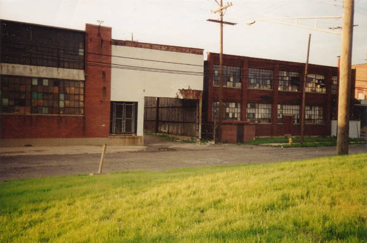
This is a weird bit of forgotten Columbus which I stumbled upon one early morning while driving around downtown with my girlfriend. We headed west on Nationwide Boulevard, through the arena district, past Neil Avenue and the Buggyworks, past the casket company and a really odd little diner in a trailer. Down at the place where Nationwide dead-ends is a power plant and a police substation, but right before that there was a low industrial building with a gigantic open garage-type doorway.
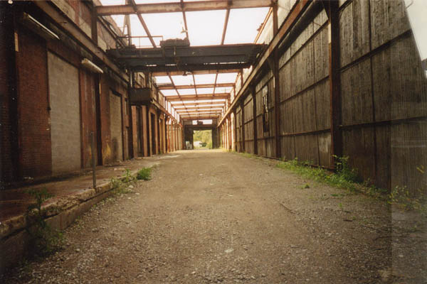
At the opposite corner of this big building is the police substation, but it seemed safe enough to drive through. We first found that this end of the building is completely falling apart. The roof is missing, leaving only metal framework overhead. One hallway full of crumbling rooms was as crappy and disintegrating as any abandoned building.
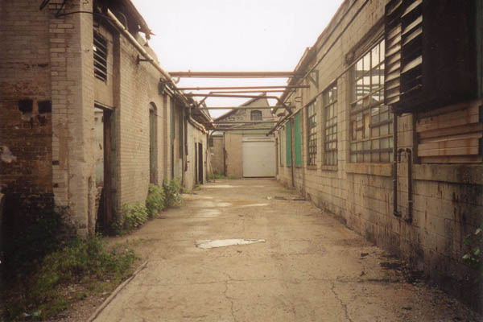
Further down was a big open area with an old Camaro parked in it. Next the ground dropped and was filled with water that came up to my car door. Railroad tracks poked out of the asphalt in places, buried beneath layers of pavement.
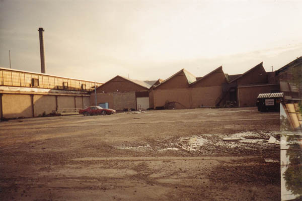
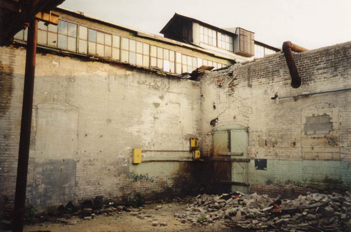
But next up was the weirdest part: the subway car sitting on an overgrown railroad siding.
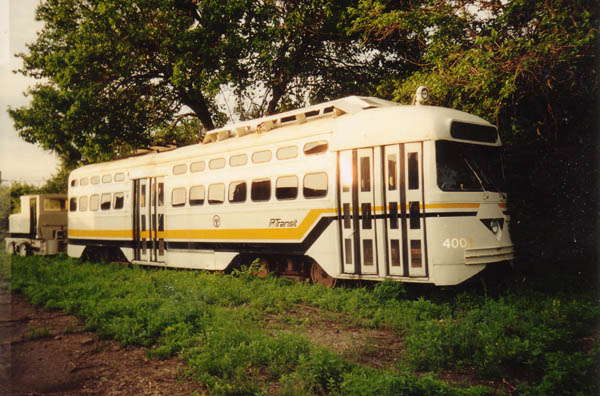
White with black and yellow stripes down the side, the subway seemed to have come from nowhere. The tracks behind it curved out of sight, overgrown with weeds, and the tracks ahead disappeared beneath the asphalt. A little push car was parked behind it.
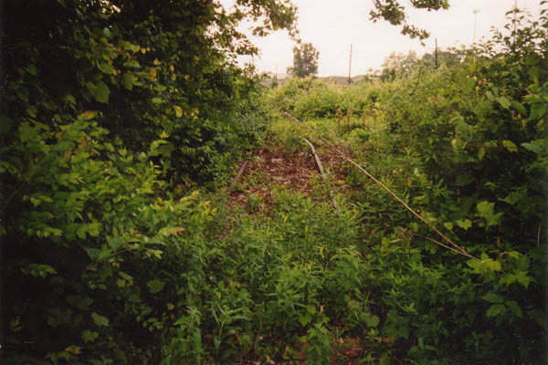
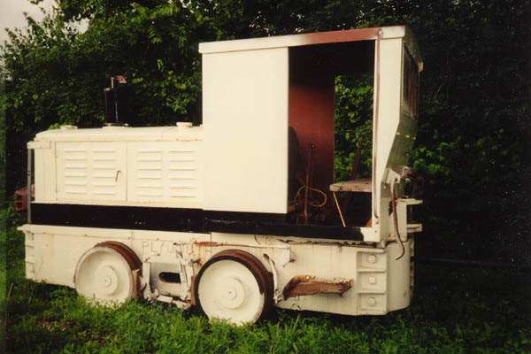
Columbus has never had a subway system--not even a light rail system like Cleveland. But this one says PA TRANSIT on the side. My girlfriend and I pushed the folding front doors open and found the inside dusty but in excellent shape. We also studied the route map inside to decide which city it was from. As many of you may already know, the subway car is from the South Hills of Pittsburgh, Allegheny County, part of their interurban light rail system. This model was just recently retired. For more info you can visit the official site at www.ridegold.com.
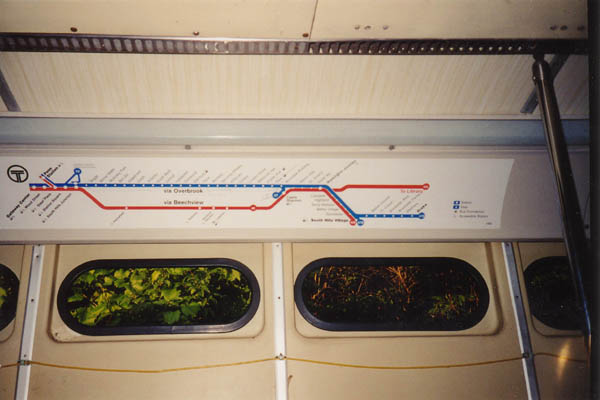
All of which begs the question: what the hell is a train car from Pittsburgh doing in this half-demolished section of Columbus? Well, for a long time I wondered, but on a return trip with my friend J. we were frightened by a car driving back there at night. We ended up just talking to the driver, who was going to the place next door--a metal working shop called Metaldelphia. We asked what the car was doing there, and he said in his pissed-off way "probably cause we're fixin it."
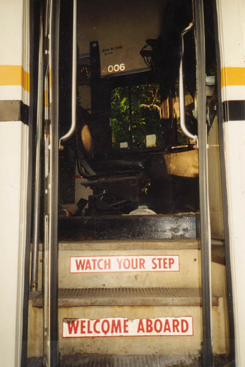
. . . . . . .
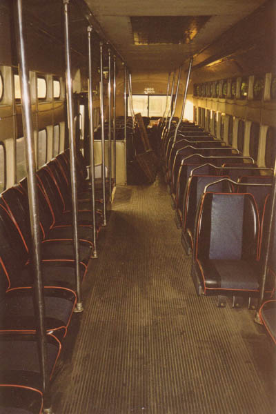
So Metaldelphia fixes transit cars. I wonder if their name has anything to do with the Philadelphia/Pennsylvania thing. Sort of makes you wonder why Pittsburgh can't fix its own subway cars. I know New York does because I saw a documentary on The Learning Channel.
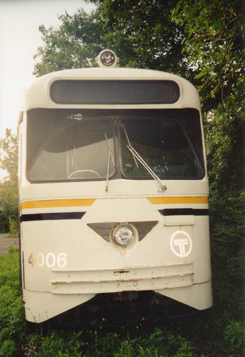
The car may still be there; I found it in June of 2001, and saw it as recently as September. But the last time I went down Nationwide that far, they had closed the big opening leading back to Metaldelphia. You might look for it if you're ever in the area.
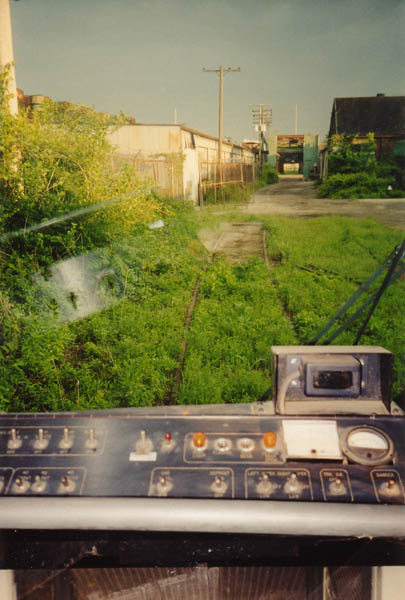
Back
forgottenohio@yahoo.com